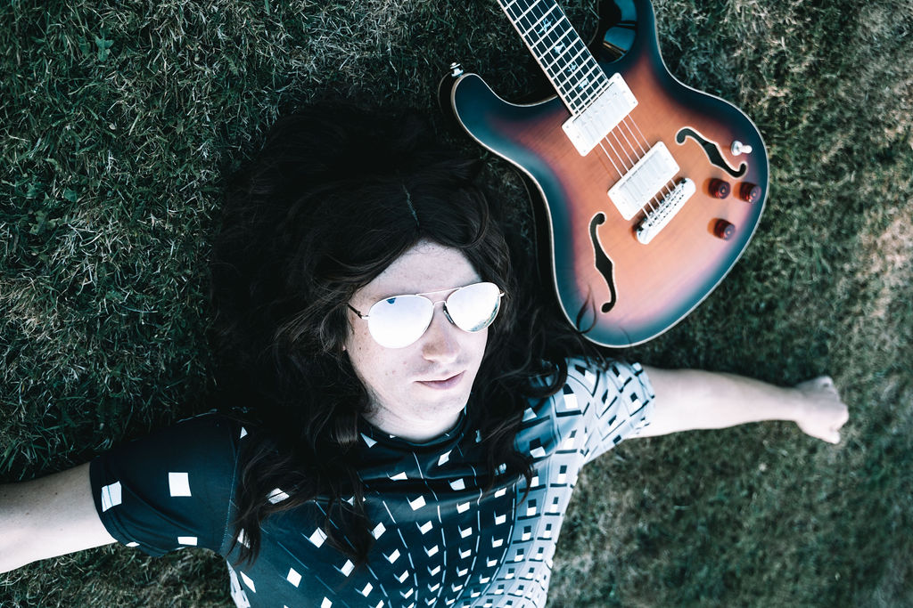

Behind the Scenes: Preparing for a Gig
Ever wondered what goes on behind the scenes before a live performance? At Bourbon Sour Band, we pour our hearts into every gig, ensuring everything runs smoothly and delivers maximum impact.
Preparation begins days in advance. We fine-tune our setlist, ensuring it fits the event's theme and audience. Rehearsals help us perfect transitions and harmonies, minimising errors on stage.
On the day of the gig, sound checks are crucial. We test every piece of equipment to ensure optimal audio quality. Once everything is ready, we focus on energising ourselves (and the guests), excited to create another unforgettable experience for our audience.
We'll usually turn up earlier than expected (roughly 1.5-2 hours before) to make sure we have the lie of the land, know where the power is and where we can get the best sound from the venue.
It might seem obvious but everything needs warming up. We'll usually stretch and/or exercise before we arrive. Guitar strings, vocals, harmonicas, some amps, etc. All need warming up before a show to ensure they aren't going to throw a bum note or strange sound.
Performing is like no other job, especially when its contingent on you to make sure everything is in place (sound, lighting, musicians, instrumentation, etc.). We're required to wear many hats in order to make sure you have a good time and we play our best.
While it might seem like we turn up, have a good time and leave (of course we enjoy ourselves :)), there are many steps and moving parts that have to happen before and after a show to deliver a performance to be proud of.